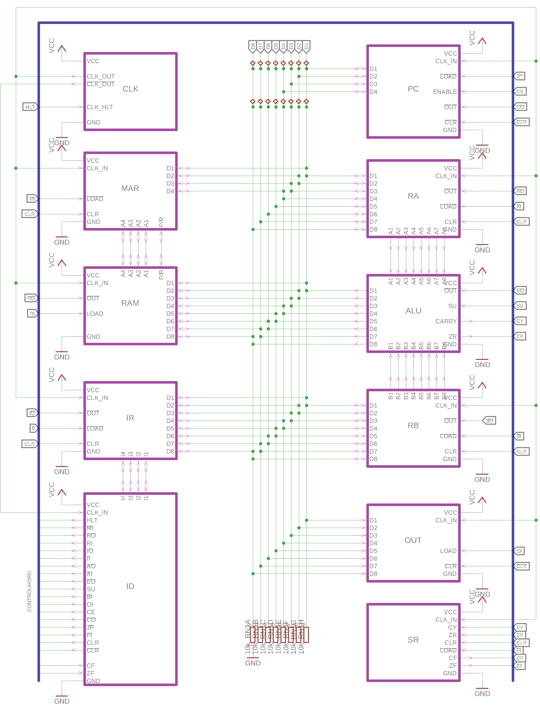

Hardware Blocks¶
The SAP-1 Processor can logically be grouped into the following submodules.
The individual modules communicate over the 8-bit Data Bus and are controlled by the control lines in the Control Word. Other than that, the only shared signals between modules are the global clock (CLK and its inverse !CLK), and the clear signal (CLR and !CLR).
The block diagram shows how the modules are connected together. The 8-bit bus in the middle is the databus, while the blue line on the outside is the control word with 16 control lines.
